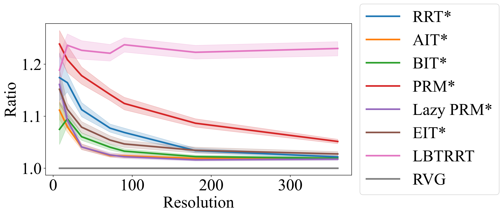

Abstract
Shortest-path roadmaps, also known as reduced visibility graphs, provide a highly efficient multi-query method for computing optimal paths in two-dimensional environments. Combined with Minkowski sum computations, shortest-path roadmaps can compute optimal paths for a translating robot in 2D. In this study, we explore the intuitive idea of stacking up a set of reduced visibility graphs at different orientations for a polygonal holonomic robot to support the fast computation of near-optimal paths, allowing simultaneous 2D translation and rotation. The resulting algorithm, rotation-stacked visibility graph (RVG), is shown to be resolution-complete and asymptotically optimal. Extensive computational experiments show RVG significantly outperforms state-of-the-art single- and multi-query sampling-based methods on both computation time and solution optimality fronts. Source code and supplementary materials are available at github.com/arc-l/rvg.
Introduction
What Does a Rotation-Stacked Visibility Graph (RVG) Do?
RVG constructs a layered visibility graph over multiple discrete orientations, allowing efficient, high-quality path planning for polygonal robots with both translation and rotation in 2D environments. It maintains completeness and asymptotic optimality while enabling rapid queries across diverse planning scenarios. The narrated demonstration below illustrates how RVG constructs and queries the graph.
Comparisons with SOTA SE(2) Rigid Body Planners
RVG, as a multi-query method dedicated to path planning for rigid bodies in SE(2), outperforms sampling-based planners in such settings, producing shorter paths with significantly lower planning times. The experiments compare RVG with RRT*, AIT*, BIT*, PRM*, Lazy PRM*, EIT*, and LBTRRT across ten maps in each of two difficulty settings.
The first figure compares solution path lengths. The second reports sampling-based path lengths relative to RVG under matched computation budgets at different orientation resolutions; a ratio above 1.0 means a longer path than RVG.


The archived ratio plot includes only samples whose ratio is at least 1.0. It therefore describes that subset of the experiments, rather than the complete distribution of relative path lengths.
Additional Examples
Non-Convex Rigid Bodies
These examples demonstrate RVG planning for non-convex rigid bodies, including a Pac-Man-shaped robot and a C-shaped robot.
Different Translation/Rotation Weighting
RVG can produce different solutions based on the relative weighting of translation and rotation during the search process.
Citation
If you find this project helpful for your research, please consider citing the following BibTeX entry.
@inproceedings{ZhaYeYu25ICRA,
author = {Duo Zhang and Zihe Ye and Jingjin Yu},
title = {Asymptotically-Optimal Multi-Query Path Planning for a Polygonal Robot},
booktitle={IEEE International Conference on Robotics and Automation},
year={2025}}